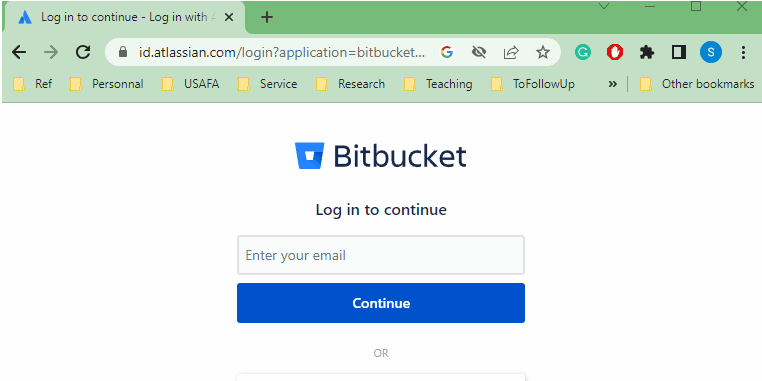

🔨 Software Setup#
📜 Agenda#
Create a Bitbucket repository.
Configure git repository.
Install and Configure PyCharm
Note
Don’t worry if it doesn’t work right. If everything did, you’d be out of a job.
💻 Procedure#
Create Bitbucket Repository#
If you don’t already have a Bitbucket account, go ahead and create one.
Once you have your account, log in to Bitbucket.
Next, navigate to the following URL: https://bitbucket.org/stanbaek2/ece487_wksp/src/master/
At the top right-hand corner of the page, you’ll see three dots (\(\cdots\)). Click on the icon to reveal more options.
From the dropdown menu, select
Fork this repository.When prompted, enter “ECE487” for the project name.
Name the new repository as follows: ECE487_LastName_FirstName.
Ensure that the access level is set to
Private repository.Give your instructor (Dr. Baek) read access: Click
Inviteand then selectAdd members.Enter Dr. Baek’s email address,
, to provide him with read access.
Note
The gif animation below has been adpated from ECE382. You must use ECE487 in place of ECE382.

{kind=link}
Important
Please name your repository as ECE487_LastName_FirstName. This will help instructors find your repository easily.
You may need to create a Bitbucket
app passwordas follows.Go to
Your Profileat the top right corner and selectPersonal Settings.Find
App Passwordsand then click onCreate app password.Write your preferred label and select permissions as needed.
Click on
Create.Save the password somewhere safe. You will not be able to see it again after this.

Install Git#
To download
Git for Windowsgo to git-scm and click on the link.Run the setup file and install Git with the default settings. If you have a Mac, you don’t need to do this step because Git is already installed on your computer.
Make a new folder called
ece487_wkspin your home folder, for example, C:\Users\stanley.baek\ece487_wksp.Right-click on the
ece487_wkspfolder and chooseGit Bash Herefrom the menu.In Bitbucket, open your repository and click on Clone. Copy the command that starts with git clone by clicking on the copy button.
Paste the command on the Bash terminal (you can use middle-click, right-click > Paste, or Shift+Ins to paste) and add a space and a dot at the end. The dot means that you want to clone the repository into the current folder. Press Enter.
If it asks for a password, type in the app password that you saved before.
Notice that you have
(master)at the end of the folder name.Note: The gif animation below is from ECE382. You should use ECE487 instead of ECE382.
{kind=link}
The figure below shows an example of a local
ece487_wkspfolder on your computer.
{kind=link}
Go back to the Git Bash terminal. If you have already closed it, right-click on an empty area inside the
ece487_wkspfolder and pickGit Bash Herefrom the menu.Type in
git remote -vand press Enter. You should see two lines that sayoriginis your remote repository on bitbucket.org for both fetching and pushing.Type in
git remote add upstream https://stanbaek2@bitbucket.org/stanbaek2/ece487_wksp.git(or copy & paste) and press Enter. This will add the instructor’s repository as another remote source.Type in
git remote -vand press Enter. You should now see two more lines that say upstream is the original repository that you forked from.Note: The gif animation below has been adpated from ECE382. You must use ECE487 in place of ECE382.
{kind=link}
If the instructor’s code changes, you will be notified and you need to run
git fetch upstreamto get the latest updates on your local files.When you push or pull your code, you will use origin, which is your own Bitbucket repository.

Install and Configure VS Code#
To get Python 3.11, go to python.org and click on the download button. Run the file and follow the steps to install it on your computer.
To get VS Code, go to VS Code and click on the download button for your operating system. Run the file and follow the steps to install it on your computer.
When you install VS Code, make sure you check the last four boxes as shown in the picture below. This will let you use VS Code with Python and Git more easily.
{kind=link}
To open the
ece487_wkspfolder with VS Code, right-click on it and chooseOpen with Codefrom the menu.To open the
Show All Commandsmenu, go to Help and click on it, or pressShift+Ctrl+P. This is a useful menu that you will use a lot, so remember the shortcutShift+Ctrl+P.To create a virtual environment for Python, type in the first few letters of
Python: Create Environmentin theShow All Commandsmenu and select it.Pick
Venvto create a virtual environment.Select the Python path that you want to use.
Select
requirements.txtto install the Python packages that you need for this course.Wait for a few minutes until all the packages are installed.
Click on the gear icon at the bottom left corner and select
Settings.Selct the
workspacetab and click on the turn page icon at the top right corner. This will opensettings.jsonTo copy the code for the virtual environment settings, open vscode.md and copy the code inside the curly brackets.
Paste the code into settings.json and save it. This will make sure that the virtual environment starts automatically when you open the workspace.
{kind=link}
Open
README.mdand type in your name for author. To save the file, pressCtrl+s.You should see the number 1 next to the
Source Controlicon. Click on theSource Controlicon and type in “initial commit”.Click on the arrow next to the
Commitbutton and pickCommit & Pushon the drop down menu.
{kind=link}
You can accomplish the same thing in
Git Bash.Open
Git Bashand type ingit add -Aorgit add -alland pressEnter.Type in
git commit -m "Initial commit."and pressEnter.Type in
git pushand pressEnterEnter your username and password if prompted.
Tip
There are also many third-party graphic user interface (GUI) clients. Check out https://git-scm.com/downloads/guis.
Attention
It is your responsibility to check your files have been successfully pushed to your Bitbucket repository. Always visit your Bitbucket repository after you push your assignments to the repository.
🚚 Deliverables#
Take screenshots of the following and submit them via Gradescope. Use Snip & Sketch (Win+Shift+S) in Windows 10 or Shift+CMD+4 in Mac to take a screenshot. Save it in png or jpg.
Warning
Snap a picture of your computer screen with a mobile device or digital camera and then upload it to Gradescope. This will show that you have no idea what sampling aliasing (a concept covered in ECE215) is and you are not qualified for a bachelor’s degree in ECE. You will lose 30 points every time you submit a picture of a computer screen taken by your phone or mobile device. And yes, I’m quite serious about this.
Deliverable 1#
Provide a screenshot of your Bitbucket repository as shown below
{kind=link}
Deliverable 2#
Provide a screenshot of your VS Code as shown below. Make sure you have the
.venvand.vscodefolders under theEXPLORERwindow.